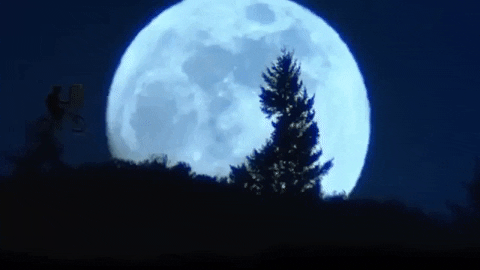

1980
Jan 2 .Australian Open Men's Tennis: Guillermo Vilas retains title for 4th and last Grand Slam win; beats American John Sadri 7-6, 6-3, 6-2
Jan 16.Paul McCartney is arrested at Tokyo International Airport for possession of marijuana; he is sent to jail for nine days before being deported
Jan 26.175,000 pay to hear Frank Sinatra sing in Rio de Janeiro
Feb 6.John Wayne Gacy goes on trial for the murder of 33 young men in Cook County, Illinois
Feb 7.Pink Floyd premiere their live version of "The Wall" at the Los Angeles Memorial Sports Arena in Los Angeles, California
Feb 14.US launches Solar Maximum Mission Observatory to study solar flares
Feb 18.Billy Wyman said he will leave Rolling Stones in 1983 (Sure!)
Feb 23.Oil tanker explosion off Pilos, Greece, causes 37-mil-gallon spillage
Feb 24.US ice hockey team clinches gold medal with 4-2 win over Finland at the Lake Placid Winter Olympics; comes after 4-3 "Miracle on Ice" victory against hot favorite Soviet Union
Mar 3.Pierre Trudeau sworn in, for the second time, as the 17th Prime Minister of Canada
Mar 5.Earth satellites record gamma rays from remnants of supernova N-49
Mar 13.American John Wayne Gacy receives the death sentence in Illinois for the murder of 12 people
Mar 27.Mount St Helens becomes active after 123 years
Apr 7.Jimmy Carter breaks relations with Iran during hostage crisis
Apr 11.Paul McCartney releases single "Coming Up"
Apr 30.Terrorists seize Iranian Embassy in London
may 6 .Star Wars:The empire strikes back is released
May 9.Slasher horror film "Friday the 13th" is released in US cinemas
May 16.Paul McCartney releases "McCartney II" album
May 18.Mount St Helens erupts in Washington state, causing the largest landslide in history, killing 57 people and costing $1 billion in damage
May 23.Horror film "The Shining" released directed by Stanley Kubrick, starring Jack Nicholson and Shelley Duvall, based on book by Stephen King
May 29.Larry Bird beats out Magic Johnson for NBA rookie of year
May 30.1st papal visit to France since 1814
Jun 7."Cars" by Gary Numan hits #9
Jun 13.UN Security Council calls for South Africa to free Nelson Mandela
Jun 17.Columbia Records releases Bruce Springsteen's fifth studio album "The River"; the 2-record set becomes a global smash, going top five in 8 countries
Jun 23."David Letterman Show" debuts on NBC-TV daytime David Letterman Comedian and TV Host David Letterman
Jul 2.Comedy film "Airplane!" written and directed by David Zucker, Jim Abrahams, and Jerry Zucker and starring Robert Hays and Julie Hagerty premieres
Jul 18.Billy Joel's "Glass Houses" album tops US charts, featuring "It's Still Rock 'n' Roll to Me"
Aug 4.John Lennon and Yoko Ono begin recording "Double Fantasy" in NYC
Sep 4.Yes performs its last concert at Madison Square Garden
Sep 20."Blizzard of Ozz", the debut solo album by English rock musician Ozzy Osbourne, is released in the United Kingdom Ozzy Osbourne Rock Vocalist Ozzy Osbourne
Sep 22.John Lennon and Yoko Ono sign a recording contract with Geffen Records
Sep 23.Bob Marley's last concert at Stanley Theatre Pittsburgh
Sep 28.Carl Sagan's 13 part "Cosmos" premieres on PBS
Sep 30.Ethernet specifications published by Xerox working with Intel and Digital Equipment Corporation
Oct 6.John Lydon (aka Johnny Rotten of the Sex Pistols) sentenced to 3 months imprisonment on assault charges
Oct 20.Geffen records release their first album, Donna Summer's "The Wanderer"
Oct 24.John Lennon releases single "(Just Like) Starting Over" in UK
Nov 1.USSR performs nuclear test
Nov 4.Republican candidate Ronald Reagan is elected President of the United States, defeating incumbent Democrat US President Jimmy Carter by a landslide
Nov 8.Voyager 1 space probe discovers 15th moon of Saturn
Nov 9.Iraqi President Saddam Hussein declares holy war against Iran
Nov 13.US spacecraft Voyager 1 sends back 1st close-up pictures of Saturn
Nov 21.John Lennon and Yoko Ono pose nude for photographer Allan Tannenbaum
Nov 21."Hi Infidelity" 9th studio album by REO Speedwagon is released
Dec 4.Two months after death of drummer John Bonham, Led Zeppelin announces they will disband
Dec 10.USSR performs underground nuclear test
Dec 8.Annie Leibovitz has a photo-shoot with John Lennon, the last person to professionally photograph him before he is murdered on the same day
Dec 19.Comedy film "9 to 5" starring Dolly Parton, Jane Fonda and Lily Tomlin is released
1981
Jan 4."Frankenstein" opens & closes on Broadway
Jan 4.British police arrest Peter Sutcliffe, the "Yorkshire Ripper"
Jan 16.John Lennon's single "Woman" is posthumously released in the UK
Jan 20.Ronald Reagan inaugurated as the 40th President of the United States of America
Jan 30.8th American Music Awards: Barbra Streisand & Kenny Rogers win
Feb 5."Piaf" opens at Plymouth Theater NYC for 165 performances
Feb 6.Beatles Paul McCartney, Ringo Starr & George Harrison record a tribute to John Lennon
Feb 6.Crime film "Fort Apache: The Bronx" starring Paul Newman released amid protests in the US
Feb 13.Longest sentence published by "The New York Times" - 1286 words
Feb 19.George Harrison is ordered to pay ABKCO Music $587,000 for "subconscious plagiarism" of his song "My Sweet Lord" with Ronnie Mack's song "He's So Fine"
Feb 21.Japan launches Hinotori satellite to study solar flares (580/640 k)
Feb 24.Britain's Prince Charles announces engagement to Lady Diana Spencer
Feb 24.An earthquake registering 6.7 on the Richter scale hits Athens, killing 16 people and destroying buildings in several towns west of the city.
Feb 27.Paul McCartney and Stevie Wonder record the single "Ebony & Ivory"
Mar 10."Bette Davis Eyes" single released by Kim Carnes (Billboard Song of the Year 1981)
Mar 20.Argentine ex-president Isabel Peron sentenced to 8 years
Mar 27."Blizzard of Ozz", the debut solo album by English rock musician Ozzy Osbourne, is released in the United States
Mar 29.Jorge Rafael Videla resigns as President and dictator of Argentina, handing the reins to Roberto Viola
Mar 30.US President Ronald Reagan is shot and wounded in an assassination attempt by John Hinckley, three others are also wounded
Apr 7."Street Songs" 5th studio album by Rick James is released (Billboard Album of the Year 1981)
Apr 24.San Antonio blocks 20 Golden State shots to set NBA reg game record
Apr 26."Copperfield" closes at ANTA Theater NYC after 13 performances
May 11.Andrew Lloyd Webber's musical "Cats" (based on poetry by T. S. Eliot) directed by Trevor Nunn first premieres in the West End, London
May 13.Pope John Paul II is shot and critically wounded by Turkish gunman Mehemet Ali Agca in St Peter's Square, Vatican City
May 16."Bette Davis Eyes" by Kim Carnes hits #1 for next 9 weeks
May 21.Reggae musician Bob Marley receives a Jamaican state funeral
Jun 5.George Harrison releases "Somewhere in England", his ninth studio album, includes John Lennon tribute "All Those Years Ago" (Featuring Paul and Ringo)
Jun 11.Cannibal Issei Sagawa kills Dutch student
Jun 12."Raiders of the Lost Ark" (the first Indiana Jones film) directed by Stephen Spielberg, produced by George Lucas, and starring Harrison Ford premieres
Jun 13.Teenager fires 6 blank rounds at Queen Elizabeth II
Jun 13.Tom Snyder interviews Charles Manson on "Tomorrow"
Jun 22.Mark David Chapman pleads guilty to killing former Beatle John Lennon
Jun 24."For Your Eyes Only", 12th James Bond, starring Roger Moore and 1st drected by John Glen premieres in London
Jun 25.Microsoft is restructured to become an incorporated business in its home state of Washington
Jun 28."Piaf" closes at Plymouth Theater NYC after 165 performances
Jul 7.Sandra Day O'Connor nominated for the Supreme Court, 1st female Supreme Court justice
Jul 9.Nintendo releases arcade game Donkey Kong in Japan (July 31 in the US)
Jul 10.Walt Disney's "Fox & The Hound" released
Aug 1.MTV premieres at 12:01 AM
Aug 1."Endless Love" single released by Diana Ross and Lionel Richie (Billboard Song of the Year 1981, Billboard Greatest Song Duet of All-Time)
Aug 18."My Fair Lady" opens at Uris Theater NYC for 119 performances
Aug 24.Mark David Chapman is sentenced to 20 yrs to life for John Lennon's murder
Aug 25.Voyager 2's closest approach to Saturn (63,000 miles/100,000 km)
Aug 26.Voyager 2 takes photos of Saturn's moon Titan
Sep 12."The Smurfs" animated cartoon series by Hanna-Barbera first broadcasts in North America
Sep 25.Rolling Stones begin their 6th US tour (JFK Stadium, Philadelphia)
Sep 28.“Physical” single released by Olivia Newton-John (Billboard Song of the Year 1982)
Oct 11.Then unknown musician Prince Rogers Nelson opens for The Rolling Stones at the Los Angeles Coliseum
Oct 31.1st live US radio drama in 25 years (Halloween Story on NBC)
Dec 9.Porn star John Holmes charged with Laurel Canyon murders
Dec 30."That Girl" single released by Stevie Wonder
Dec 31.CNN Headline News debuts
1982

Jan 2."Camelot" closes at Winter Garden Theater NYC after 48 performances
Jan 4.Golden Gate Bridge closed for 3rd time by fierce storm
Jan 8.Johnny Cash Parkway opens in Hendersonville, Tennessee
Jan 20.Heavy metal musician Ozzy Osbourne bites the head off a bat on stage in Des Moines, Iowa
Jan 21.Shaolin Temple" martial arts film released, first Hong Kong feature filmed in China, directed by Chang Hsin Yen, starring Jet Li in his debut role
Jan 22.75% of North America is covered by snow
Jan 25.9th American Music Awards: Pat Benatar & Kenny Rogers win
Feb 1."Late Night With David Letterman" debuts on NBC-TV, Bill Murray is first guest
Feb 3.John Sharples of England finishes 371 hours of disco dancing
Feb 13.Pink Floyd's album "Dark Side of the Moon" marks 402 weeks in the album charts
Mar 6.NBA highest scoring game: San Antonio beat Milwaukee 171-166 (3 OT)
Mar 7.NCAA Tournament Selection televised live for 1st time
Mar 15.Nicaragua suspends their citizens rights for 30 days
Mar 20.Joan Jett & Blackhearts' "I Love Rock 'n' Roll" goes #1 for 7 weeks
Mar 29.54th Academy Awards: "Chariots of Fire", Henry Fonda & Katharine Hepburn win
Apr 1.US formally transfers Canal Zone to Panama
Apr 2.Several thousand Argentine troops seize the Falkland (Malvinas) Islands from Great Britain
Apr 19.Sally Ride is named the 1st American woman astronaut
May 7.IBM releases PC-DOS version 1.1
May 10.WABC radio (NYC) plays its last record - John Lennon's "Imagine"
May 19.Sophia Loren jailed in Naples, Italy for tax evasion
May 29.1st papal visit to Britain since 1531
May 29.Pentagon plans 1st strategy to fight a nuclear war
Jun 4."Star Trek II: The Wrath of Khan," released in USA
Jun 11.Pope John Paul II visits Argentina
Jun 11."E.T. the Extra-Terrestrial", directed by Steven Spielberg, starring Henry Thomas and Drew Barrymore, is released
Jun 14.Argentina surrenders to Great Britain, ending the 74-day Falklands Islands conflict
Jun 21.Paul McCartney releases single "Take It Away"
Jun 22.Prince Charles and Princess Diana take new-born son Prince William home from hospital
Jun 25.Science-fiction film "Blade Runner", directed by Ridley Scott, starring Harrison Ford and Rutger Hauer, is released
Jul 11.FIFA World Cup Final, Santiago Bernabéu, Madrid, Spain: Italy beats West Germany, 3-1 in front of 90,000
Jul 16.NASA launches Landsat 4 to thematic map the Earth
Jul 24.Heavy rain causes a mudslide that destroys a bridge at Nagasaki, Japan, killing 299
Jul 24.Single "Eye Of The Tiger" by Survivor from "Rocky III" soundtrack starts 6-week run at No. 1 on US charts (Grammy for Best Rock Performance)
Aug 17.First Compact Discs (CDs) released to the public in Germany
Aug 29.Steve Miller's single "Abracadabra" hits #1
Sep 1.The United States Air Force Space Command is founded.
Sep 15.First issue of "USA Today" published by Gannett Co Inc
Sep 17."Bad to the Bone" single by George Thorogood and the Destroyers first released
Sep 22.Sitcom "Family Ties starring Michael J. Fox premieres on NBC
Sep 26."Knight Rider", starring David Hasselhoff, debuts on NBC
Sep 29.1st broadcast of comedy "Cheers" on NBC-TV starring Ted Danson and Shelley Long
Sep 30.Columbia Records releases Bruce Springsteen's sixth studio album "Nebraska", a solo record, made without a backing band
Oct 1.The Sony CDP-101, world's first commercially released Compact Disc player released in Japan for 168,000 yen ($730)
Oct 1.Marvin Gaye releases his last studio album "Midnight Love" featuring single "Sexual Healing"
Oct 7.Musical "Cats" opens at Winter Garden Theater on Broadway, NYC
Oct 14.US President Reagan proclaims a war on drugs
Oct 27.IBM ROM is capable of EGA graphics
Oct 29.Paul McCartney and Michael Jackson release single "The Girl is Mine"; peaks at # 2 in US, and #8 in UK
Nov 20.Drew Barrymore at age 7 hosts "Saturday Night Live"
Nov 30."Thriller", 6th studio album by Michael Jackson is released
Dec 1."Tootsie" directed by Sydney Pollack and starring Dustin Hoffman and Jessica Lange premieres in Hollywood
Dec 8.Colombian writer Gabriel García Márquez receives the Nobel Prize for Literature
Dec 8."Sophie's Choice", directed by Alan J. starring Meryl Streep and Kevin Kline, is released
Dec 10.Heavyweight Michael Doakes KOs Mike Weaver in 1:03 in Las Vegas
Dec 31.TV soap "Doctors" ends 19 year run

1983
Jan 1.'New age music' radio program "Hearts of Space" makes its national syndication debut on U.S. National Public Radio
Jan 4.Eurythmics release their breakthrough second studio album "Sweet Dreams (Are Made of This)"
Jan 9.British PM Margaret Thatcher visits Falkland Islands
Jan 13.AMA urges ban on boxing, cites Muhammad Ali's deteriorating condition
Jan 20. American gangster Roy DeMeo is found murdered in his car trunk after disappearing a few days earlier
Jan 23."A-Team" with Mr T premieres on NBC
Jan 25.Nazi war criminal Klaus Barbie arrested in Bolivia
Jan 29."Down Under" by Men At Work hits #1 on UK pop chart
Jan 29.40th Golden Globes: E.T. the Extra-Terrestrial, Ben Kingsley & Meryl Streep win
Feb 7."José Cuervo" single released by Shelly West (Billboard Song of the Year 1983)
Feb 11.4th largest snowfall in NYC history (18"(46 cm))
Feb 11.Single "Total Eclipse of the Heart" sung by Bonnie Tyler and composed by Jim Steinman is released
Feb 13.Bernstein, Levinson & Link's musical "Merlin" opens at Mark Hellinger Theater NYC for 199 performances
Feb 20.Japan launches Tenma satellite to study x-rays (450/570 km)
Feb 22.Vladimir Salnikov (USSR) sets 1500m free style swimming record
Feb 26.Michael Jackson's "Thriller" album goes #1 and stays #1 for 37 weeks
Feb 26.Shortwave pirate Radio USA (Wellsville, NY) begins transmission
Feb 28.Final TV episode of "M*A*S*H", a 2-hour special directed by series star Alan Alda titled "Goodbye, Farewell and Amen", airs (CBS); record 125 million watch in the US
Feb 28.U2 release their third studio album "War" featuring protest song "Sunday Bloody Sunday", their 1st No. 1 UK album
Mar 2.Compact Disc recordings developed by Phillips & Sony introduced
Mar 8.IBM releases PC DOS version 2.0
Mar 8.President Reagan 1st known use of term "Evil Empire" (about the USSR) in speech in Florida
Mar 23.US President Ronald Reagan introduces Strategic Defense Initiative ("Star Wars")
Mar 27.Neil Simon's "Brighton Beach Memoirs" premieres in NYC
Mar 31."Monty Python's The Meaning of Life," is released in the US
Apr 8.In front of a live audience of 20 tourists, David Copperfield makes the Statue of Liberty disappear
Apr 15.Tokyo Disneyland opens
Apr 18.Pulitzer Prize awarded to Alice Walker for the novel "The Color Purple"
Apr 25.Yuri Andropov invites US schoolgirl Samantha Smith to the Soviet Union
Apr 25.NASA space probe Pioneer 10 travels beyond Pluto's orbit.
May 10.TV sitcom "Laverne & Shirley" last airs on ABC-TV
May 14."She Blinded Me with Science" by Thomas Dolby hits #5
May 20."Every Breath You Take" single released by The Police (Billboard Song of the Year, 1983)
May 21.David Bowie's "Let's Dance" single goes #1 David Bowie Singer-Songwriter David Bowie
May 25."Return of the Jedi" (Star Wars Episode VI), produced by George Lucas first released
Jun 2.1980 movie "Attack of the Killer Tomatoes" released in Germany
Jun 5.37th Tony Awards: "Torch Song Trilogy" and "Cats" win
Jun 6."Octopussy", 13th James Bond film, starring Roger Moore, Maud Adams and Louis Jourdan premieres in London
Jun 8."Trading Places", American comedy film, is released
Jun 11."Always Something There To Remind Me" by Naked Eyes peaks at #8
Jun 11."Faithfully" by Journey peaks at #12
Jun 11."My Love" by Lionel Richie peaks at #5
Jun 11."Theme From Doctor Detroit" by Devo peaks at #59
Jun 12.Comet C/1983 (Sugano-Saigusa-Fujikawa) approaches 0.0628 AUs of Earth
Jun 15."Black Adder" TV comedy premieres starring Rowan Atkinson and Tony Robinson and written by Richard Curtis and Rowan Atkinson on BBC1
Jun 16.Ringo Starr releases album "Old Wave" album in West Germany
Jun 17.Ed Warren and Lorraine Warren exorcise a "werewolf demon" from Bill Ramsey, although lack of photo or video evidence has called this claim into question
Jun 18.7th Shuttle Mission-Challenger 2 launches Sally Ride as 1st US woman in space
Jun 25."Evita" closes at Broadway Theater, NYC, after 1568 performances
Jul 5.France invades Algeria
Jul 14.Mario Bros. is first released by Nintendo in Japan as an arcade game about an Italian-American plumber
Jul 21.Thunder storm cuts short Diana Ross' free concert in NY's Central Park
Jul 25.Metallica's debut album Kill 'Em All is released on Megaforce Records
Jul 29."Friday Night Videos" premieres on NBC TV
Aug 4.Danielle Steel’s romance novel “Thurston House” is published
Aug 15.Ramones guitarist Joey Ramone beaten in fight, and undergoes brain surgery
Sep 9.Radio Shack announces their color computer 2 (Coco2)
Sep 16.Arnold Schwarzenegger becomes a US citizen
Sep 23.Argentine military regime gives amnesty to military and political assassins
Oct 3.Paul McCartney and Michael Jackson release single "Say, Say, Say" in UK
Oct 11."Can't Slow Down" second studio album by Lionel Richie is released
Oct 19.US Senate establishes Martin Luther King Jr. federal holiday
Nov 2."Thriller" single released worldwide by Michael Jackson
Nov 9.Amsterdam brewer Freddie Heineken kidnapped
Nov 18.Argentina announces its ability to produce enriched uranium for nuclear weapons
Dec 17 .Disco in Madrid catches fire; 83 die
Dec 23.Journal "Science" publishes 1st report on nuclear winter
Dec 27.Pope John Paul II pardons man who shot him (Mehmet Ali Agca)
1984
1985
1986
1987
1988
1989